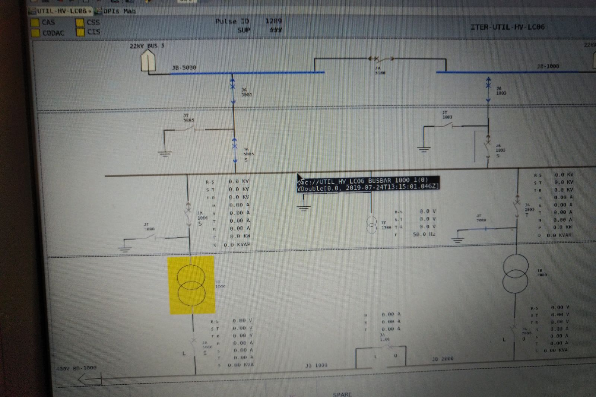
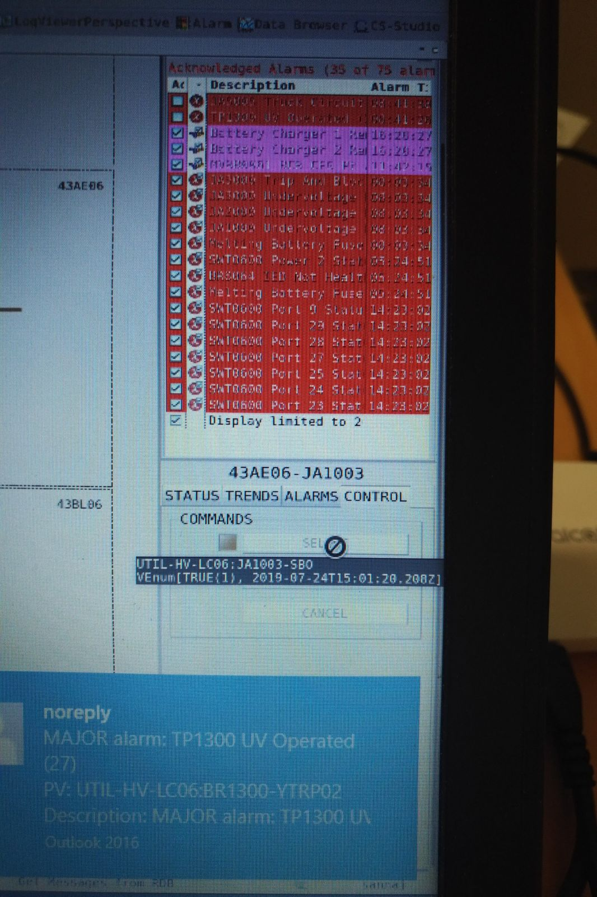
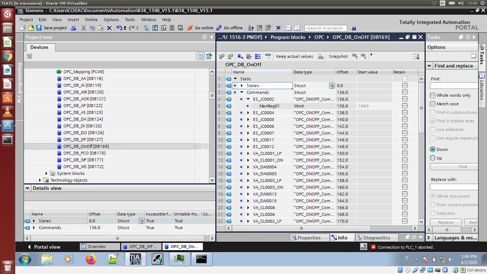
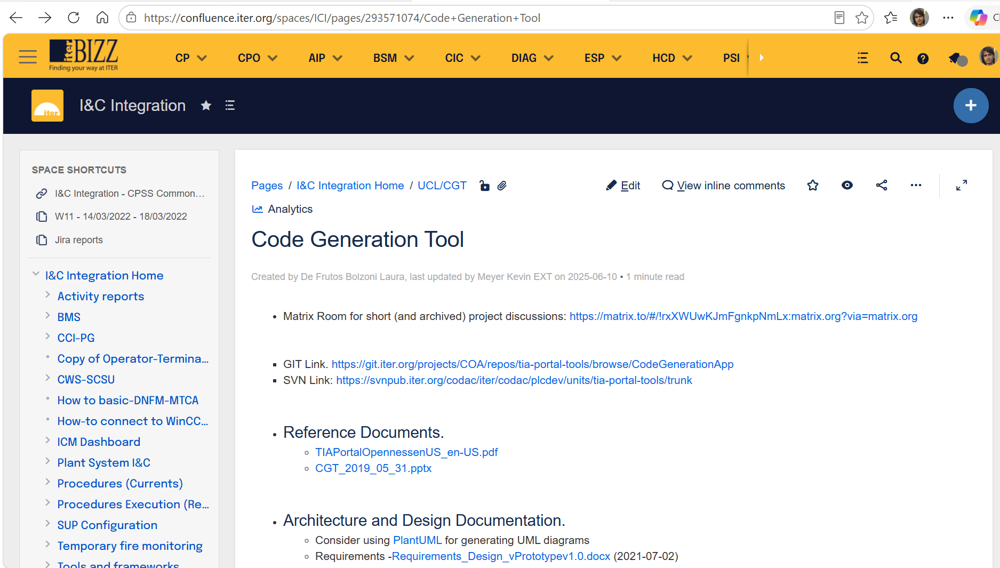

Code Generation Automation & Control Architecture (CGT & UCL): Architected and developed the proprietary Code Generation Tool (CGT), leveraging the underlying Unified Control Library (UCL) to automate source code block generation for Siemens PLCs and SCADA systems. Established scalable, modular building blocks that standardized industrial control software across F4E projects, drastically reducing code redundancy and accelerating the Plant System development process by 10x.
DevOps, CI/CD & Compliance: Built robust CI/CD pipelines utilizing Git, Jenkins, GitLab CI, and Docker. Implemented automated testing suites (UnitTest) and Sphinx documentation (producing Architecture Diagrams, Test Plans, and User Manuals), strictly adhering to nuclear fusion sector quality and safety standards.
Agile Project Management: Spearheaded Agile/Scrum methodologies across team workflows, establishing Jira ticketing systems, user story mapping, and Kanban boards for transparent visual management and timeline tracking.
Engineering Management & Collaboration: Standardized operational workflows and technical guidelines via Confluence Standard Operating Procedures. Streamlined task management, cross-functional collaboration, and issue tracking utilizing Atlassian Jira to align team execution with project milestones.